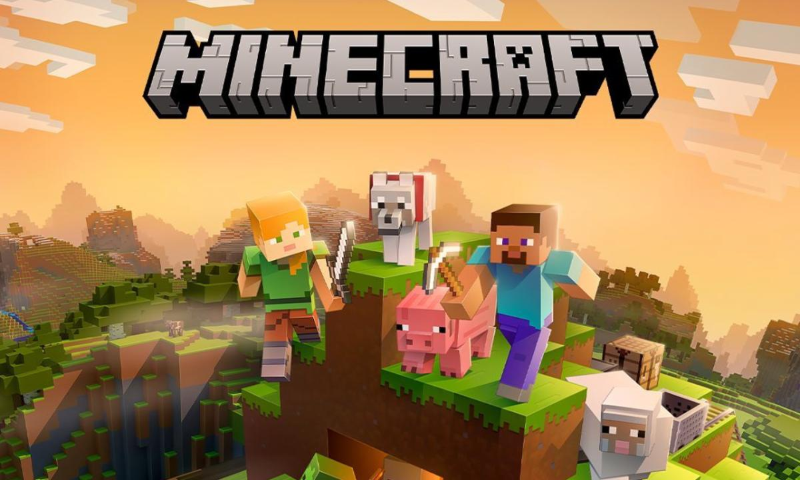

En ocasiones, los juegos más populares son el resultado de un arduo trabajo publicitario que requiere años de organización y millones de dólares. Los videojuegos virales son títulos que alcanzan popularidad de manera rápida e inesperada. A menudo, esto ocurre gracias a la cobertura de las redes sociales, que luego capta la atención de los medios masivos.
Empezamos con este listado, ¡disfrútalo!
| Imagen | Nombre del juego | Nombre del diseñador | Año de lanzamiento | Desarrollador (Empresa) | Un poco de historia |
|---|---|---|---|---|---|
 |
Pokémon Go | Satoshi Tajiri | 2016 | Niantic | Pokémon GO se convirtió en el primer juego viral de realidad aumentada exclusivo para móviles. Fomentaba la actividad física y captó la atención global. |
 |
Getting Over It With Bennett Foddy | Bennett Foddy | 2017 | Bennett Foddy | Un juego viral que aprovechó el auge de los streamers y la interacción con la audiencia. |
 |
Farmville | Mark Skaggs | 2009 | Zynga | Un juego simple que cautivó a millones con su enfoque en la agricultura virtual. |
 |
Among Us | Marcus Bromander | 2018 | Innersloth | Un juego de detectives espaciales que se volvió viral gracias a las actualizaciones y el streaming. |
|  | Minecraft | Markus Persson y Jens Bergensten | 2011 | Mojang AB | Un juego de construcción de bloques que se ha convertido en un fenómeno global. |
Esto fue todo por mi parte, espero que te haya gustado este listado.